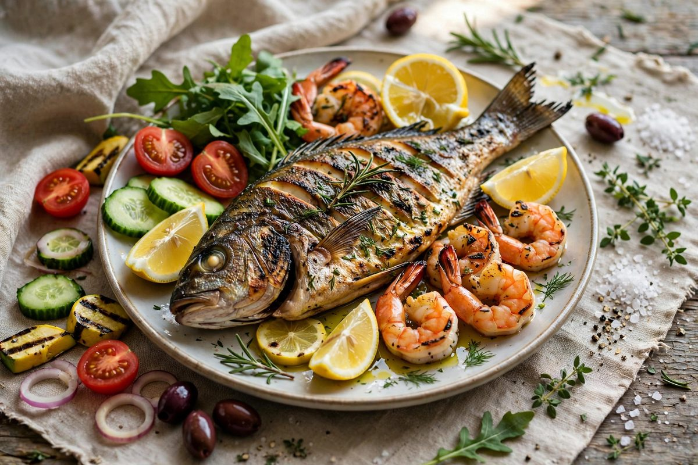

Home » Guides
Seafood

Fish and seafood are central to the Mediterranean diet. Coastal communities have eaten them for centuries, and they provide lean protein, omega-3 fats, iodine, and selenium. This guide explains which fish to choose, how often to eat it, and the simple cooking methods that suit it best.
Why fish matters
Oily fish such as sardines, mackerel, salmon, and anchovies are rich in long-chain omega-3 fats, which support heart and brain health. White fish such as cod, sea bass, and hake provide lean protein with very little fat. Seafood also supplies iodine, which supports thyroid function, and selenium, an important antioxidant. The Mediterranean pattern recommends fish at least twice a week, with at least one of those servings being oily fish. Eating fish regularly is one of the habits most strongly linked with the diet's health benefits.
Choosing fish
Fresh fish should smell of the sea, not strongly fishy, and its eyes should be clear and its flesh firm. Small oily fish like sardines and anchovies are excellent choices: they are cheap, sustainable, and low in mercury. Frozen fish is a good option too, since it is frozen soon after catching and keeps its nutrients. Tinned sardines, mackerel, and tuna are convenient and affordable. Vary your choices through the week, and ask your fishmonger what is in season locally — seasonal fish is usually fresher and better value.
Cooking fish simply
Fish needs little cooking and is easy to overcook, so keep it simple. Grill sardines for three to four minutes per side with lemon and herbs. Bake sea bass whole with fennel and lemon for about twenty minutes. Pan-fry fillets in olive oil for two to three minutes per side, and let them rest for a minute before serving. Poach white fish gently in a tomato and herb sauce. The fish is done when the flesh flakes easily with a fork and is opaque all the way through. Serve with vegetables, salad, and a drizzle of olive oil.
Sustainability and safety
Choose fish from well-managed stocks when you can, and vary the species you eat rather than always buying the same one. Small fish are generally lower in mercury than large predators like swordfish and shark, which are best eaten rarely. Pregnant women and young children should follow local guidance on mercury in fish, which usually means limiting tuna and avoiding the largest species. Tinned fish is a practical, low-waste option, and frozen fish reduces the chance of waste at home.
Buying fish: a quick guide
Buying fish well is a skill worth learning. At a fish counter, look for clear eyes, bright red gills, and firm flesh that springs back when pressed. The fish should smell of the sea, not strongly fishy. Ask the fishmonger what is freshest today, and what is in season — they will usually give you good advice and may even prepare the fish for you. If you buy frozen fish, check that the packaging is intact and the fish is not covered in ice crystals, which suggest it has thawed and refrozen. Tinned fish is a reliable backup, and it is worth keeping a few tins in the cupboard for quick meals.
Frequently Asked Questions
How often should I eat fish?
The Mediterranean pattern recommends fish at least twice a week, including one serving of oily fish such as sardines, mackerel, or salmon.
Is tinned fish as healthy as fresh fish?
Yes, largely. Tinned sardines and mackerel keep their omega-3 fats and add calcium from the soft bones. Choose fish tinned in olive oil or water rather than brine, and check the salt content.
What if I do not like fish?
Try small oily fish grilled with strong flavours like garlic and lemon, or start with mild white fish. If you still do not enjoy it, legumes, nuts, and seeds can cover much of the nutrition, though omega-3s are harder to replace.